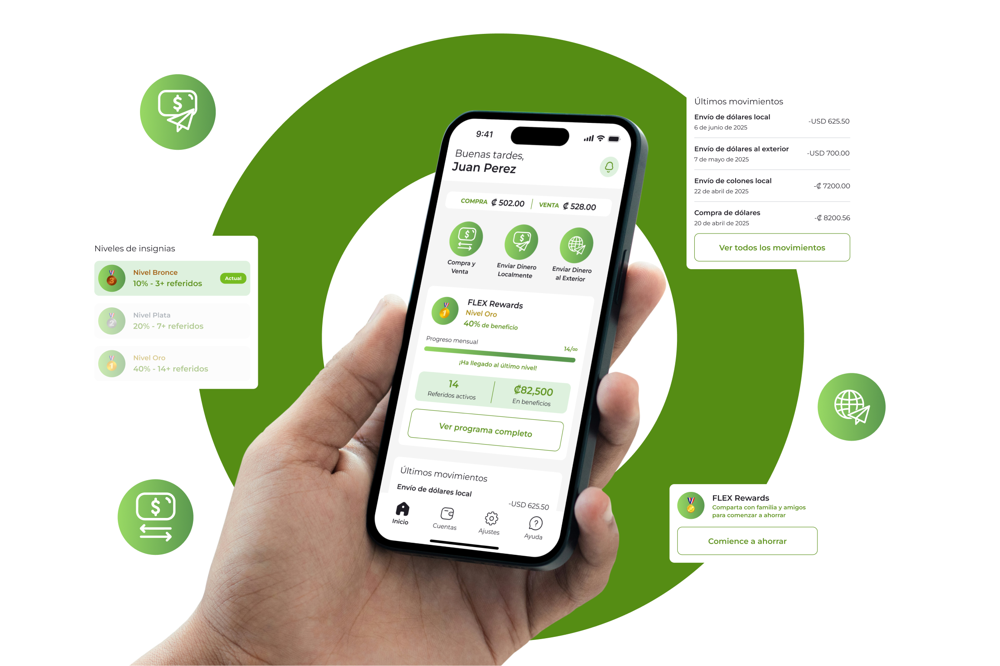
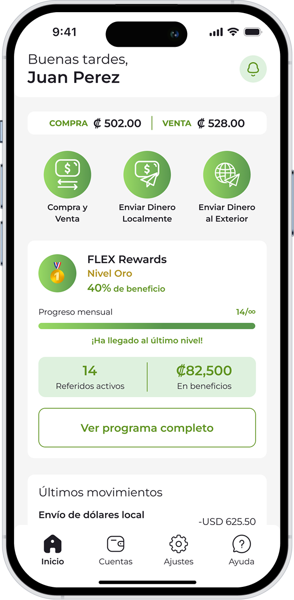
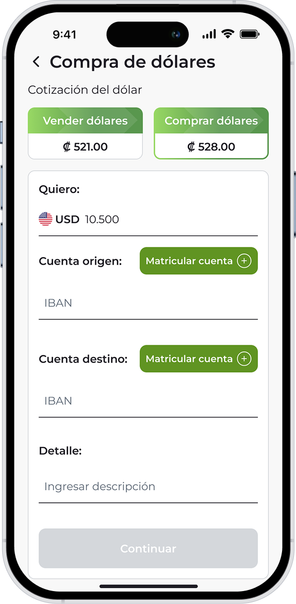
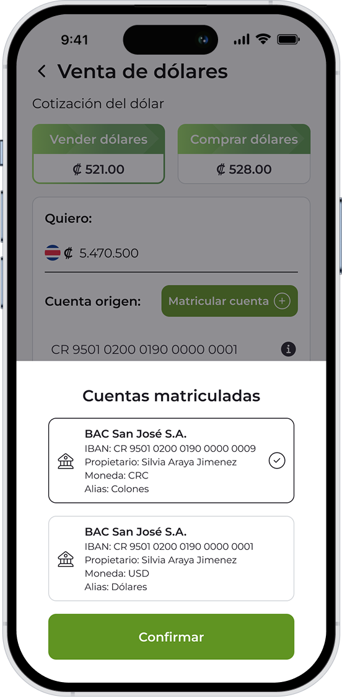
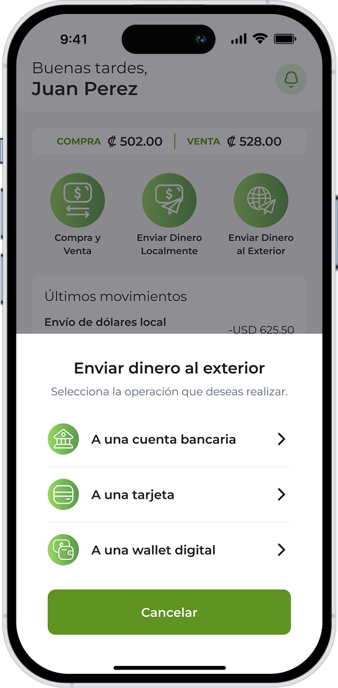
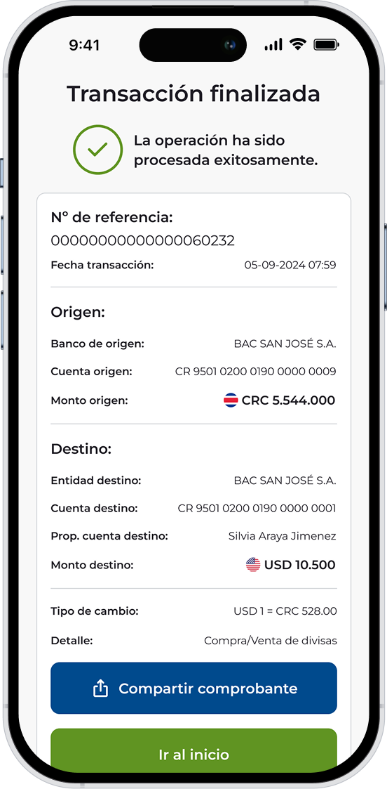
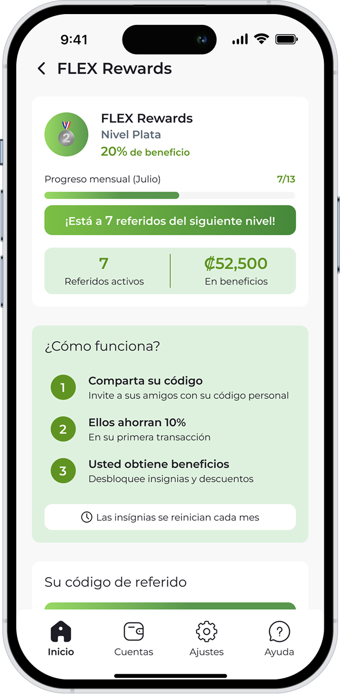
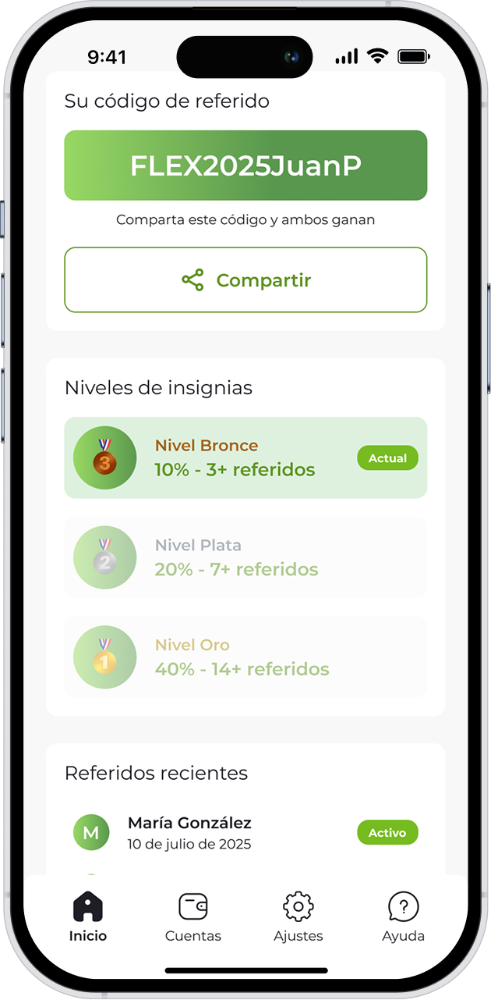

Money Without Borders
A redesigned app that simplifies currency exchange and international money transfers, making a complex financial tool feel effortless, trustworthy, and fast.

I led the end-to-end redesign, from discovery and research through to high-fidelity UI and user testing.
Flex is a currency exchange app based in Costa Rica. When I took on the project, the app had been built by a marketing manager with no UX background, it was barely functional and was generating more problems than solutions for its users. To understand what the new version needed to be, I ran a workshop with all client stakeholders: we mapped who their users were, what friction they were experiencing, and what the team wanted to achieve. We built personas, mapped existing flows, and drew competitive inspiration. That workshop, combined with behavioral data from the data team, made the real problem immediately clear.
The behavioral data told the story clearly: the registration flow had the highest friction in the entire product. A significant number of users opened the app once and never came back. The challenge was rebuilding that first experience, and earning user trust at every step that followed.
I redesigned the app from scratch, starting with the registration flow, then rebuilding every core flow around it. A cleaner navigation, transparent exchange rates, a guided transfer experience, and a tiered referral rewards program replaced what had been a confusing, trust-eroding product. Wireframes were validated with stakeholders before moving to high-fidelity UI and interactive prototypes, which were then tested with the app's most active users before launch.
With registration confirmed as the highest drop-off point, wireframes started there. Concepts were validated internally before moving to high-fidelity UI. Interactive prototypes were then tested with the app's most active users, the people who knew the product's problems best, and their feedback shaped the final version before it was published.
Workshop with all client stakeholders to understand users, gather feedback, define goals, build personas, map current flows, and draw competitive inspiration.
Behavioral data revealed where users dropped off. The registration flow had the highest friction, many opened the app once and never came back.
First sketches prioritized the registration flow. Concepts were validated internally with stakeholders before moving to high-fidelity design.
High-fidelity screens and interactive Figma prototypes covering all core flows, registration, currency exchange, and international transfers.
Usability sessions with the app's most active users confirmed the new flow resolved their friction points, driving a final round of refinements before launch.
A consistent visual language covering color, typography, and component patterns, ensuring a cohesive design system that scales across the entire product.
ABCDEFGHIJKLMNOPQRSTUVWXYZ
abcdefghijklmnopqrstuvwxyz
0 1 2 3 4 5 6 7 8 9
Every screen was validated with actual users, people sending money to family, exchanging currencies for travel, building savings across borders.
01, Homepage
One of the clearest findings from research was that many users opened the app once and never came back. The redesigned home had to give them a reason to return, and a clear path forward. Live exchange rates, three quick-action shortcuts, and the user's FLEX Rewards status are all surfaced immediately, turning what was a confusing entry point into an instant sense of control.

02, Currency Exchange
The original exchange flow was one of the main sources of confusion for users. The redesign strips it back to its essentials: a single toggle between buying and selling, live Compra / Venta rates, account selection, and a clear step-by-step confirmation. Transparent fees and instant feedback were non-negotiable, users needed to feel confident before committing to a transaction.


03, International Transfer
International transfers were previously a source of anxiety, users weren't sure which method to use or what would happen next. The redesign turns it into a guided flow: choose a destination method (bank account, card, or digital wallet), follow a clear step-by-step path, and land on a success screen with full transaction details and a shareable receipt.


04, FLEX Rewards
Retaining users was as important as acquiring them. The FLEX Rewards system was designed to create a habit loop: refer friends, track monthly progress, and unlock higher discount tiers, Bronce (10%), Plata (20%), and Oro (40%). Users share a personal code and see exactly how close they are to the next level. A system that turns a satisfied user into a product advocate.


The updated registration and currency exchange flows received very positive feedback from users who participated in the testing process. Although the data team underwent changes during the project and final retention metrics were not available, the qualitative response confirmed the redesign was moving in the right direction.
| Metric | Legacy Version | New Version | Improvement |
|---|---|---|---|
| Completion Time | 4 min avg. | ~90 sec avg. | ↓ 66% |
| Drop Rate | High abandonment | Significantly reduced | ↓ 78% |
| User Satisfaction | Low NPS | Positive NPS | ↑ 50% |
* Estimates based on comparative analysis and usability testing sessions conducted during the redesign process.